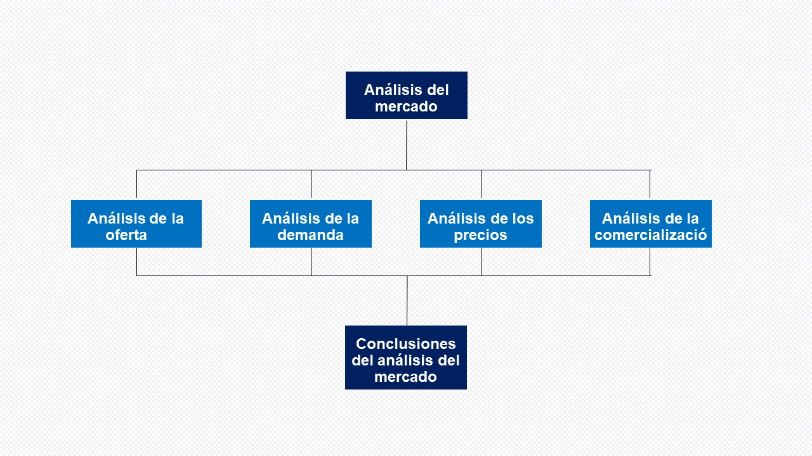
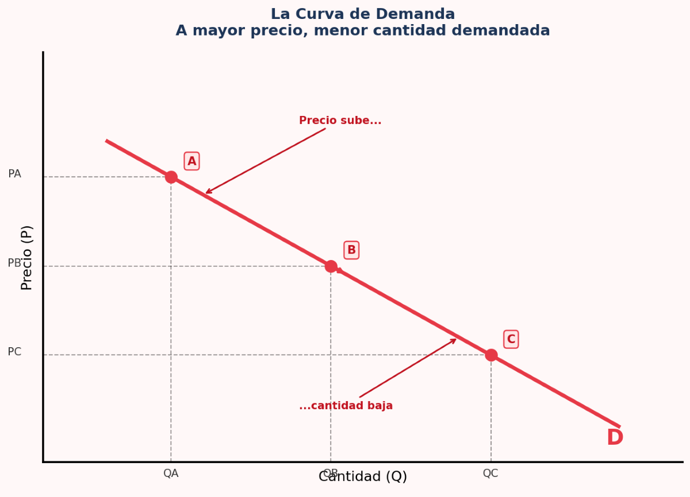
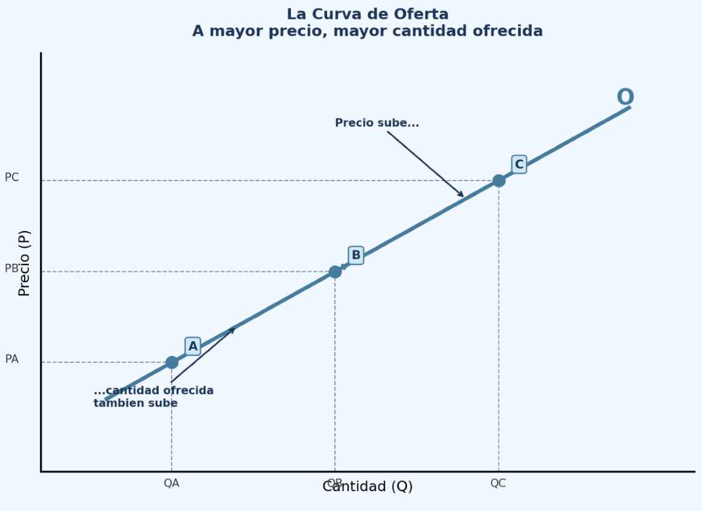
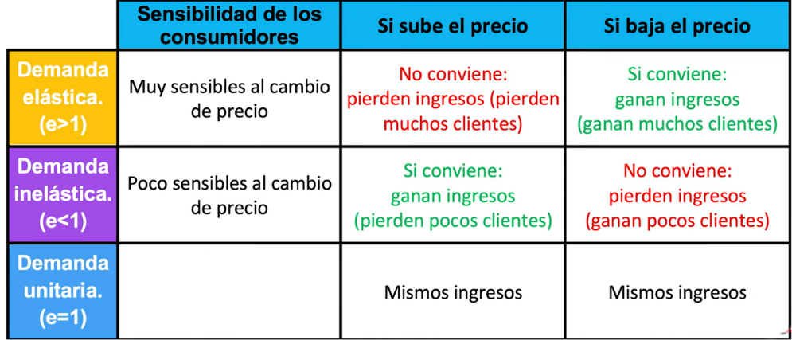

Estudio de mercado
08 mayo 2026
Universidad del Sol
7to. Semestre – Administración de Empresas / Ing. Comercial
Objectivo general
Al concluir el estudio de este capítulo el alumno conocerá, comprenderá y aplicara una metodología para realizar un estudio de mercado enfocado a la evaluación de proyectos.
Objetivos especificos
- Definir que es demanda y oferta.
- Explicar cuales son los componente y etapas de la investigación de mercado.
- Explicar métodos de investigación y técnicas de pronósticos de mercado.
Introduccion
Para entender la viabilidad de un proyecto de inversión, no basta con tener una buena idea; es imperativo comprender las fuerzas invisibles que determinarán si esa idea se transformará en ingresos reales. En el marco de un estudio de factibilidad, la Demanda y la Oferta no son solo curvas en un gráfico, sino la representación del comportamiento humano y empresarial bajo condiciones de escasez. A continuación, se detalla la conceptualización técnica de ambos pilares:
Estructura de analisis

El mercado
Escasez y Asignación: La economía busca asignar recursos limitados (capital, trabajo, insumos) para satisfacer necesidades humanas ilimitadas.
Definición de Mercado: Es el lugar donde se realizan transacciones de bienes y servicios por dinero. En un mercado competitivo, hay tantos compradores y vendedores que ninguno puede influir por sí solo en el precio.
Equilibrio de Mercado: Se alcanza cuando el precio y la cantidad motivan tanto a productores a fabricar como a consumidores a adquirir el bien.
La Demanda: La Perspectiva del Mercado Meta
- En un estudio de factibilidad, la demanda es la cuantificación de la necesidad o el deseo de un bien o servicio, respaldado por el poder adquisitivo. Para un administrador, no solo importa cuánta gente “quiere” el producto, sino cuántos están dispuestos y pueden pagarlo a distintos niveles de precio.
La demanda es la búsqueda de satisfactores para una necesidad. Es vital entender qué la mueve:
Ley de la Demanda: Generalmente, si el precio sube, la cantidad demandada baja (y viceversa), lo que se gráfica como un movimiento sobre la misma curva.
Factores que desplazan la curva: Variables ajenas al precio que hacen que la demanda total cambie:
Ingresos: Si el ingreso sube, aumenta la demanda de “bienes normales”, pero puede bajar la de “bienes inferiores”.
Bienes Relacionados: Los complementarios (si sube el precio de uno, baja la demanda del otro, como cine y palomitas) y los sustitutos (si baja el precio del sustituto, cae la demanda de nuestro producto).
Gustos y Expectativas: Las preferencias personales y lo que el cliente espera del futuro afectan el consumo actual.
La curva de la demanda
La curva de demanda representa el comportamiento de los compradores. Tiene pendiente negativa (va hacia abajo) porque existe una relación inversa entre el precio y la cantidad: cuanto más caro es un bien, menos unidades la gente quiere comprar.
En el siguiente gráfico vemos tres puntos:
• Punto A: El precio es alto → los compradores piden poca cantidad.
• Punto B: Precio intermedio → cantidad intermedia.
• Punto C: El precio es bajo → los compradores demandan mucha más cantidad.
Ley de la Demanda:
Cuando el precio sube, la cantidad demandada baja.
Cuando el precio baja, la cantidad demandada sube.

La curva de la oferta
La curva de oferta representa el comportamiento de los vendedores. Tiene pendiente positiva (va hacia arriba) porque existe una relación directa entre el precio y la cantidad ofrecida: cuanto más alto es el precio, más les conviene producir y vender.
En el gráfico vemos tres puntos:
• Punto A: El precio es bajo → los vendedores ofrecen poca cantidad (no es rentable).
• Punto B: Precio intermedio → cantidad intermedia.
• Punto C: El precio es alto → los vendedores ofrecen mucha más cantidad.
Ley de la Oferta:
Cuando el precio sube, la cantidad ofrecida también sube.
Cuando el precio baja, la cantidad ofrecida también baja.

La oferta y demanda - un ejemplo
Imagina que estás en un mercado de frutas. Hay dos grupos de personas:
los compradores (que quieren fruta) y los vendedores (que tienen fruta para vender). La oferta y la demanda es simplemente la historia de cómo estos dos grupos interactúan para ponerse de acuerdo en un precio.La Curva de Demanda — El lado de los Compradores
Cuanto más barato es algo, más gente lo quiere. Si las manzanas cuestan $10 cada una, probablemente comprarías solo una, o ninguna. Pero si cuestan $0,50, llenarías tu canasta. Esta es la Ley de la Demanda: cuando el precio sube, la cantidad demandada baja. Por eso la curva de demanda tiene pendiente negativa (va hacia abajo de izquierda a derecha) — es simplemente la naturaleza humana.
La Curva de Oferta — El lado de los Vendedores
Cuanto más alto es el precio, más quieren producir los vendedores. Si las manzanas se venden a $0,50, los agricultores apenas se molestan — no vale la pena su esfuerzo. ¿Pero a $10 cada una? ¡Plantarían todos los campos que tuvieran!
Esta es la Ley de la Oferta: cuando el precio sube, la cantidad ofrecida también sube. Por eso la curva de oferta tiene pendiente positiva.
Ejercicios practicos
El Comportamiento del Consumidor
• Utilidad Marginal Decreciente: La satisfacción que da cada unidad adicional de un bien tiende a disminuir. El punto de saciedad ocurre cuando la satisfacción adicional es cero; consumir más allá produce insatisfacción. • Restricción Presupuestaria: Los consumidores tienen ingresos limitados y deben elegir la combinación de bienes que maximice su utilidad dentro de ese presupuesto. • Indiferencia: Existen “curvas de indiferencia” que muestran combinaciones de productos que dan la misma satisfacción al cliente (ej. producto substituto perfecto: libro impreso - libro electrónico, producto complementario: tablet - funda tablet)
Estructuras y Fallas de Mercado
No todos los mercados son perfectos. Existen imperfecciones que debemos identificar: • Monopolio/Monopsonio: Un solo vendedor o un solo comprador controla el precio. • Oligopolio/Oligopsonio: Un grupo pequeño de empresas o compradores domina el mercado.
Elasticidades


Mgtr. Andreas Schneider - Schneider | Consulting Firm